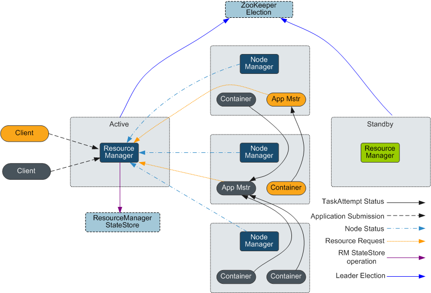

简介（支持内存喝CPU两种资源分配）
- YARN是Hadoop2.0中的资源管理系统，是一个通用的资源管理模块，可以为各类应用程序进行资源管理和调度。YARN并不局限于MapReduce，也可以供其他框架使用，比如Tez、Spark、Storm等。YARN类似于资源管理系统Mesos和更早的Torque。
- 在最早的Hadoop MapReduce计算架构中，进行作业调度时使用FIFO Scheduler。FIFO是指，所有用户的作业都被提交到一个队列中，然后按照作业的优先级，再按照作业提交时间的先后顺序选择将被执行的作业。Hadoop中只有一个作业队列，被提交的作业按照先后顺序在作业队列中排队，新来的作业插入到队尾。一个作业运行完成后，总是从队首取下一个作业运行。这种调度策略的优点是简单、易于实现，同时也减轻了JobTracker的负担。缺点是，它没有考虑到作业的紧迫程度，另外对小作业的运行不利。因此，逐渐衍生出可以分配资源的Superior Scheduler和Capacity Scheduler。
结构
YARN模型主要由ResourceManager、ApplicationMaster和NodeManager组成，如下图1所示

client | YARN Application客户端，用户可以通过客户端向ResourceManager提交任务，查询Application运行状态等。 |
RourceManage | 负责集群中所有资源的统一管理和分配。接收来自各个节点（NodeManager）的资源汇报信息，并根据收集的资源按照一定的策略分配给各个应用程序。 |
NameNode | NodeManager（NM）是YARN中每个节点上的代理，管理Hadoop集群中单个计算节点，包括与ResourceManger保持通信，监督Container的生命周期管理，监控每个Container的资源使用（内存、CPU等）情况，追踪节点健康状况，管理日志和不同应用程序用到的附属服务（auxiliary service）。 |
ApplicationMaster | 即图中的App Mstr，负责一个Application生命周期内的所有工作。包括：与RM调度器协商以获取资源；将得到的资源进一步分配给内部任务（资源的二次分配）；与NM通信以启动/停止任务；监控所有任务运行状态，并在任务运行失败时重新为任务申请资源以重启任务。 |
Container | Container是YARN中的资源抽象，封装了某个节点上的多维度资源，如内存、CPU、磁盘、网络等（目前仅封装内存和CPU），当AM向RM申请资源时，RM为AM返回的资源便是用Container表示。YARN会为每个任务分配一个Container，且该任务只能使用该Container中描述的资源。 |
- 在YARN中，资源调度器是以层级队列方式组织资源的，这种组织方式有利于资源在不同队列间分配和共享，进而提高集群资源利用率。如下图所示，Superior Scheduler和Capacity Scheduler的核心资源分配模型相同。
- 调度器会维护队列的信息。用户可以向一个或者多个队列提交应用。每次NM心跳的时候，调度器会根据一定规则选择一个队列，再选择队列上的一个应用，并尝试在这个应用上分配资源。若因参数限制导致分配失败，将选择下一个应用。选择一个应用后，调度器会处理此应用的资源申请。其优先级从高到低依次为：本地资源的申请、同机架的申请，任意机器的申请。
原理
新的Hadoop MapReduce框架被命名为MRv2或YARN。YARN主要包括ResourceManager、ApplicationMaster与NodeManager三个部分。MRV1 能只能给mapreduce提供服务
- ResourceManager：RM是一个全局的资源管理器，负责整个系统的资源管理和分配。主要由两个组件构成：调度器（Scheduler）和应用程序管理器（Applications Manager）。
- 调度器根据容量、队列等限制条件（如每个队列分配一定的资源，最多执行一定数量的作业等），将系统中的资源分配给各个正在运行的应用程序。调度器仅根据各个应用程序的资源需求进行资源分配，而资源分配单位用一个抽象概念Container表示。Container是一个动态资源分配单位，将内存、CPU、磁盘、网络等资源封装在一起，从而限定每个任务使用的资源量。此外，该调度器是一个可插拔的组件，用户可根据自己的需要设计新的调度器，YARN提供了多种直接可用的调度器，比如Fair Scheduler和Capacity Scheduler等。
- 应用程序管理器负责管理整个系统中所有应用程序，包括应用程序提交、与调度器协商资源以启动ApplicationMaster、监控ApplicationMaster运行状态并在失败时重新启动等。
- NodeManager：NM是每个节点上的资源和任务管理器，一方面，会定时向RM汇报本节点上的资源使用情况和各个 Container的运行状态；另一方面，接收并处理来自AM的Container启动/停止等请求。
- ApplicationMaster：AM负责一个Application生命周期内的所有工作。包括：
- 与RM调度器协商以获取资源。
- 将得到的资源进一步分配给内部的任务(资源的二次分配)。
- 与NM通信以启动/停止任务。
- 监控所有任务运行状态，并在任务运行失败时重新为任务申请资源以重启任务。
MapReduce过程详解(1)

注：
- 分片的必要性：MR框架将一个分片和一个Map Tast对应，即一个Map Task只负责处理一个数据分片。数据分片的数量确定了为这个Job创建Map Task的个数。
- Application Master(AM)负责一个Application生命周期内的所有工作。包括：与RM调度器协商以获取资源；将得到的资源进一步分配给内部任务（资源的二次分配）；与NM通信以启动/停止任务；监控所有任务运行状态，并在任务运行失败时重新为任务申请资源以重启任务。
- ResourceManager(RM) 负责集群中所有资源的统一管理和分配。它接收来自各个节点（NodeManager）的资源汇报信息，并根据收集的资源按照一定的策略分配给各个应用程序。
- NodeManager（NM）是每个节点上的代理，它管理Hadoop集群中单个计算节点，包括与ResourceManger保持通信，监督Container的生命周期管理，监控每个Container的资源使用（内存、CPU等）情况，追踪节点健康状况，管理日志和不同应用程序用到的附属服务（auxiliary service）。
MapReduce过程详解(2)
注：
- MR组件在FI中只有jobhistoryserver实例，它只是存储任务的执行记录，执行列表，没有它，也可以运行任务。但是无法查询任务的详细信息。
- Reduce阶段的三个过程：
- Copy：Reduce Task从各个Map Task拷贝MOF文件。
- Sort：通常又叫Merge，将多个MOF文件进行合并再排序。
- Reduce：用户自定义的Reduce逻辑。
YARN的组件架构

- 在图中有两个客户端向YARN提交任务，蓝色表示一个任务流程，棕色表示另一个任务流程。
- 首先client提交任务，ResourceManager接收到任务，然后启动并监控起来的第一个Container,也就是App Mstr。
- App Mstr通知nodemanager管理资源并启动其他container。
- 任务最终是运行在Container当中。
- ResourceManager 负责集群资源统一管理和计算框架管理，主要包括调度与应用程序管理。
- 调度器：根据容量、队列等限制条件，将系统中的资源分配给各个正在运行的应用程序。
- 应用程序管理器：负责管理整个系统中的所有应用程序，包括应用程序提交，与调度器协商资源，启动并监控AppMaster运行状态。
- NodeManager节点资源管理监控和容器管理，RM是系统中将资源分配给各个应用的最终决策者。
- AppMaster各种计算框架的实现（例如MRAppMaster）向ResourceManager申请资源，通知NodeManager管理相应的资源。
- Container YARN中的资源抽象，它封装了某个节点上的多维度资源，如内存、CPU等。
MapReduce On YARN任务调度流程

调度说明：
- 步骤1：用户向YARN 中提交应用程序， 其中包括ApplicationMaster 程序、启动ApplicationMaster 的命令、用户程序等。
- 步骤2：ResourceManager 为该应用程序分配第一个Container， 并与对应的NodeManager 通信，要求它在这个Container 中启动应用程序的ApplicationMaster 。
- 步骤3：ApplicationMaster 首先向ResourceManager 注册， 这样用户可以直接通过ResourceManage 查看应用程序的运行状态，然后它将为各个任务申请资源，并监控它的运行状态，直到运行结束，即重复步骤4~7。
- 步骤4：ApplicationMaster 采用轮询的方式通过RPC 协议向ResourceManager 申请和领取资源。
- 步骤5：一旦ApplicationMaster 申请到资源后，便与对应的NodeManager 通信，要求它启动任务。
- 步骤6：NodeManager 为任务设置好运行环境（包括环境变量、JAR 包、二进制程序等）后，将任务启动命令写到一个脚本中，并通过运行该脚本启动任务。
- 步骤7：各个任务通过某个RPC 协议向ApplicationMaster 汇报自己的状态和进度，以让ApplicationMaster 随时掌握各个任务的运行状态，从而可以在任务失败时重新启动任务。在应用程序运行过程中，用户可随时通
- 过RPC 向ApplicationMaster 查询应用程序的当前运行状态。
- 步骤8 应用程序运行完成后，ApplicationMaster 向ResourceManager 注销并关闭自己。
YARN HA方案
高可靠性引入冗余RM

- ResourceManager的高可用性方案是通过设置一组Active/Standby的ResourceManager节点来实现的。与HDFS的高可用性方案类似，任何时间点上都只能有一个ResourceManager处于Active状态。当Active状态的ResourceManager发生故障时，可通过自动或手动的方式触发故障转移，进行Active/Standby状态切换。
- 在未开启自动故障转移时，YARN集群启动后，管理员需要在命令行中使用YARN rmadmin命令手动将其中一个ResourceManager切换为Active状态。当需要执行计划性维护或故障发生时，则需要先手动将Active状态的ResourceManager切换为Standby状态，再将另一个ResourceManager切换为Active状态。
- 开启自动故障转移后，ResourceManager会通过内置的基于ZooKeeper实现的ActiveStandbyElector来决定哪一个ResouceManager应该成为Active节点。当Active状态的ResourceManager发生故障时，另一个ResourceManager将自动被选举为Active状态以接替故障节点。
- 当集群的ResourceManager以HA方式部署时，客户端使用的“YARN-site.xml”需要配置所有ResourceManager地址。客户端（包括ApplicationMaster和NodeManager）会以轮询的方式寻找Active状态的ResourceManager。如果当前Active状态的ResourceManager无法连接，那么会继续使用轮询的方式找到新的ResourceManager。
- 备RM升主后，能够恢复故障发生时上层应用运行的状态。当启用ResourceManager Restart时，重启后的ResourceManager就可以通过加载之前Active的ResourceManager的状态信息，并通过接收所有NodeManager上container的状态信息重构运行状态继续执行。这样应用程序通过定期执行检查点操作保存当前状态信息，就可以避免工作内容的丢失。状态信息需要让Active/Standby的ResourceManager都能访问。当前系统提供了三种共享状态信息的方法：通过文件系统共享（FileSystemRMStateStore）、通过LevelDB数据库共享（LeveldbRMStateStore）或通过ZooKeeper共享（ZKRMStateStore）。这三种方式中只有ZooKeeper共享支持Fencing机制。Hadoop默认使用ZooKeeper共享。
资源分配模型

- 调度器维护一群队列的信息。用户可以向一个或者多个队列提交应用。
- 每次NM心跳的时候，调度器根据一定的规则选择一个队列，再在队列上选择一个应用，尝试在这个应用上分配资源。
- 调度器会优先匹配本地资源的申请请求，其次是同机架的，最后是任意机器的。
- 当任务提交上来，首先会声明提交到哪个队列上，调度器会分配队列，如果没有指定则任务运行在默认队列。
- 队列是封装了集群资源容量的资源集合，占用集群的百分比例资源。
- 队列分为父队列，子队列，任务最终是运行在子队列上的。父队列可以有多个子队列。
- 调度器选择队列上的应用，然后根据一些算法给应用分配资源。
容量调度器的介绍
- 容量调度器使得Hadoop应用能够共享的、多用户的、操作简便的运行在集群上，同时最大化集群的吞吐量和利用率。
- 容量调度器以队列为单位划分资源，每个队列都有资源使用的下限和上限。每个用户可以设定资源使用上限。管理员可以约束单个队列、用户或作业的资源使用。支持作业优先级，但不支持资源抢占。
特点：
容量保证：管理员可为每个队列设置资源最低保证和资源使用上限，所有提交到该队列的应用程序共享这些资源。
灵活性：如果一个队列中的资源有剩余，可以暂时共享给那些需要资源的队列，当该队列有新的应用程序提交，则其他队列释放的资源会归还给该队列。
支持优先级：队列支持任务优先级调度（默认是FIFO）。
多重租赁：支持多用户共享集群和多应用程序同时运行。为防止单个应用程序、用户或者队列独占集群资源，管理员可为之增加多重约束。
动态更新配置文件：管理员可根据需要动态修改配置参数，以实现在线集群管理。
任务选择：
调度时，首先按以下策略选择一个合适队列：
- 资源利用量最低的队列优先，比如同级的两个队列Q1和Q2，它们的容量均为30，而Q1已使用10，Q2已使用12，则会优先将资源分配给Q1。
- 最小队列层级优先，例如：QueueA与QueueB.childQueueB，则QueueA优先。
- 资源回收请求队列优先。
然后按以下策略选择该队列中一个任务：按照任务优先级和提交时间顺序选择，同时考虑用户资源量限制和内存限制。
增强特性
增强特性 - YARN动态内存管理

- 动态内存管理可用来优化NodeManager中Containers的内存利用率。任务在运行过程中可能产生多个Container。
- 当前，当单个节点上的Container超过Container运行内存大小时，即使节点总的配置内存利用还很低，NodeManager也会终止这些Containers。这样就会经常使用户作业失败。
- 动态内存管理特性在当前是一个改进，只有当NodeManager中的所有Containers的总内存使用超过了已确定的阈值，NM总内存阈值的计算方法是Yarn.nodemanager.resource.memory-mb*1024*1024*Yarn.nodemanager.dynamic.memory.usage.threshold，单位GB，那么那些内存使用过多的Containers才会被终止。
- 举例，假如某些Containers的物理内存利用率超过了配置的内存阈值，但所有Containers的总内存利用率并没有超过设置的NodeManager内存阈值，那么那些内存使用过多的Containers仍可以继续运行。
增强特性 - YARN基于标签调度
- 在没有标签调度之前，任务提交到哪个节点上是无法控制的，会根据一些算法及条件，集群随机分配到某些节点上。而标签调度可以指定任务提交到哪些节点上。
- 比如之前需要消耗高内存的应用提交上来，由于运行在那些节点不可控，任务可能运行在普通性能的机器上。
- Label based scheduling是一种调度策略。该策略的基本思想是：用户可以为每个nodemanager标注一个标签，比如high-memory，high-IO等进行分类，以表明该nodemanager的特性；同时，用户可以为调度器中每个队列标注一个标签，即队列与标签绑定，这样，提交到某个队列中的作业，只会使用标注有对应标签的节点上的资源，即任务实际运行在打有对应标签的节点上。
- 将耗内存消耗型的任务提交到绑定了high-memry的标签的队列上，那么任务就可以运行在高内存机器上。